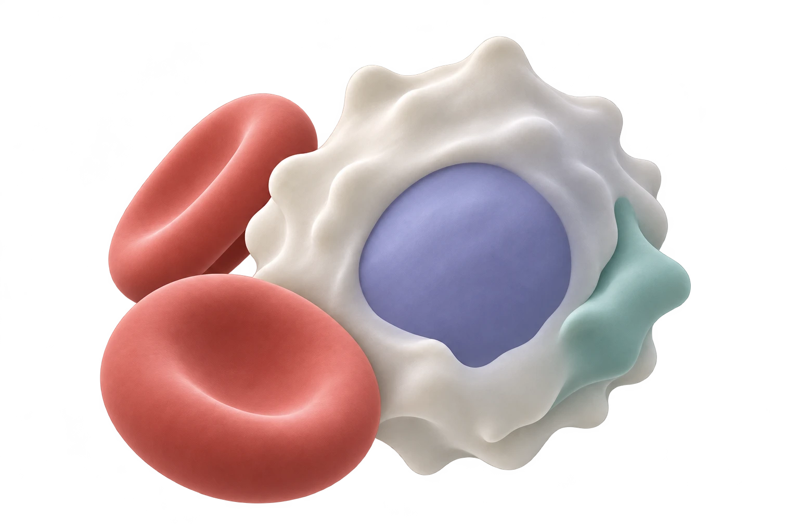
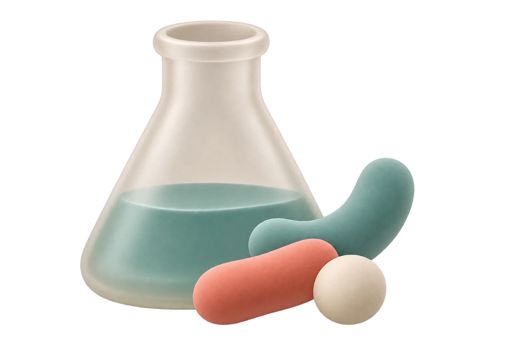

MICROBIOME RESEARCH
미생물이 질병과 치료에
미치는 영향을 연구합니다.
질환별 장내미생물의 작용 원리를 연구하고, AI 기반의 개인 맞춤형 정밀영양 치료제를 개발합니다.

Research Areas
Our Science ↗

01 / Lymphoma
림프종
림프종 환자의 장내미생물과 항암치료 반응 및 부작용의 관계를 연구합니다. 치료 예후를 예측할 바이오마커와 치료 효과를 높일 미생물 표적을 찾습니다.

02 / Neurodegenerative Diseases
퇴행성 신경질환
파킨슨병과 치매의 발생 및 진행에 관여하는 장내미생물의 기능과 숙주 요인을 연구하고, 조기 개입을 위한 치료 표적을 탐색합니다.

03 / Allergy & Autoimmunity
알레르기 및 자가면역질환
만성 자발성 두드러기(CSU)에서 장내미생물과 숙주 면역계의 상호작용을 연구하고, 면역반응을 조절할 미생물 기능을 탐색합니다.

04 / Microbiome Therapeutics
미생물 치료제 개발
개인별 장내미생물의 기능적 특성을 AI로 분석하고, 맞춤형 식이섬유 조합을 활용한 정밀영양 치료제를 개발합니다.

05 / Microbial Isolation & Culture
미생물 분리 배양
환경과 사람의 장에서 새로운 미생물 종을 발굴하고, 분리 균주의 유전체와 배양 특성을 바탕으로 대사 기능을 연구합니다.

06 / Microbial Ecology
미생물 생태
야생동물의 먹이와 계통, 서식 환경에 따른 장내미생물 차이를 분석하고, 미생물 군집의 형성 원리와 숙주 특이적인 공생 관계를 연구합니다.